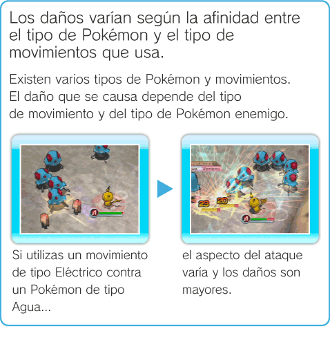
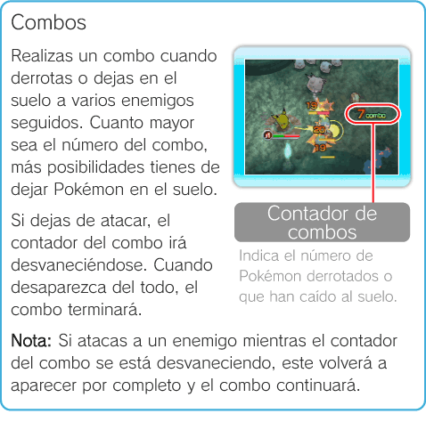

15 |
Cómo combatir |
 |
|
En las Fases o en Battle Royale, debes derrotar a los enemigos con tu Pokémon.
Atacar Puedes usar movimientos pulsando Si quieres aprender movimientos adicionales, utiliza la instalación APRENDER UN MOVIMIENTO en la Terminal (ver “Terminal” en la página 12). Al derrotar a ciertos enemigos, es posible añadirlos a tu Colección (ver “Fases” en la página 13).
 Golpes críticos Es posible que causes un golpe crítico al realizar un ataque. Cuando esto ocurra, el Pokémon enemigo se quedará aturdido. Si derrotas a un Pokémon aturdido, hay más posibilidades de que se quede en el suelo.
Cambios de Estado Determinados movimientos, como “Picotazo Ven”, pueden causar Cambios de Estado temporales a tu Pokémon o al enemigo. Algunos Cambios de Estado son positivos y otros negativos. Por ejemplo, “Envenenado” hace disminuir los PS, mientras que “Ataque↑” aumenta tus capacidades.
 |
 o
o  en el mando de Wii, pero ten en cuenta que algunos Pokémon solo conocen un movimiento.
en el mando de Wii, pero ten en cuenta que algunos Pokémon solo conocen un movimiento.

 |
 |
 |